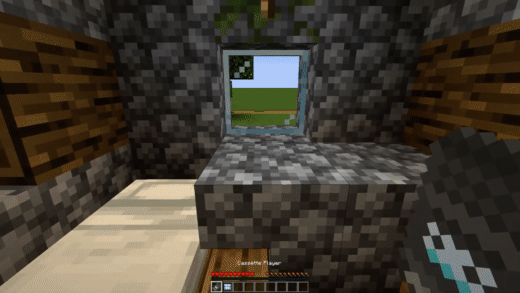

Minestuck est une modification du jeu Minecraft réaliser par une équipe indépendante afin d’y ajouter des éléments de la fiction Homestuck.
Ayant pris par au développement de se « mod », j’ai pu y incorporer différents éléments,
dont celui qui m’a pris le plus de temps, un lecteur de cassettes.
Ayant rejoint la partie développement du mod Minestuck après avoir discuter avec l'une de ces membres habitant en amérique, j'ai travaillé pendant quelques mois au coté de dessinateurs et de developpeurs provenant du monde entier afin de fournir à une communauté un travail communautaire le plus ludique possible. Assister par Kirderf, notre chef de projet et developpeur le plus compétant, j'ai pu découvrir la programmation orienté objet en java. Projet toujours en activité de nos jours, les developpeurs ont une total liberté sur ce qu'ils veulent intégré en premier. Se projet étant par dessus tout un moyen de devenir ensembles de meilleurs développeurs et graphistes. Nous avions ainsi des gens talentueux comme Riotmode qui créé des textures comme si dessous :
Puis des développeurs telle que Dweb (qui à ajouté les textures si dessous) ou moi-même qui nous chargions de les implémenter en jeu :
- Bases en java
- Prendre par à un projet anglophone
- Communiquer avec des individus de différents pays et cultures.